System Administration
Use the tools in System Admin to manage:
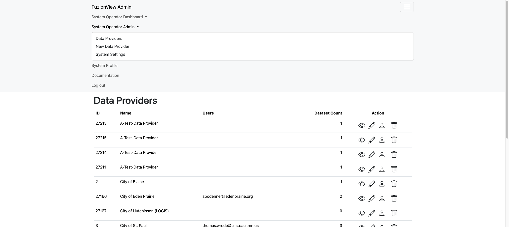
System Operator Menu
Data Providers
The Data Providers page displays a list of all the facility operators and other data providers you’ve added to the system.
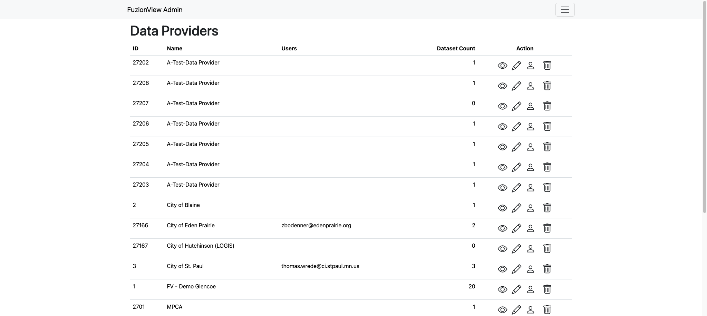
Data Providers
Add Data Provider
Add as many data providers to the system as needed by selecting Add New Data Provider from the dropdown menu or the link at the bottom of the page. Enter a clear identifying name and click Submit.
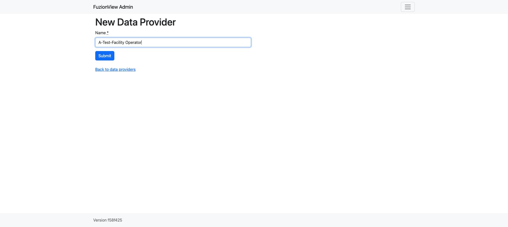
New Data Provider
Manage Data Providers
Hint
Click the Eye action icon to view and manage the data provider’s datasets
Click the Pencil action icon to edit the name
Click the Person action icon to manage users with access
Click the Trashcan action icon to delete a data provider
Rename Data Provider
Change the name of a data provider from the Data Providers list by clicking the Pencil action icon next to the provider’s information:
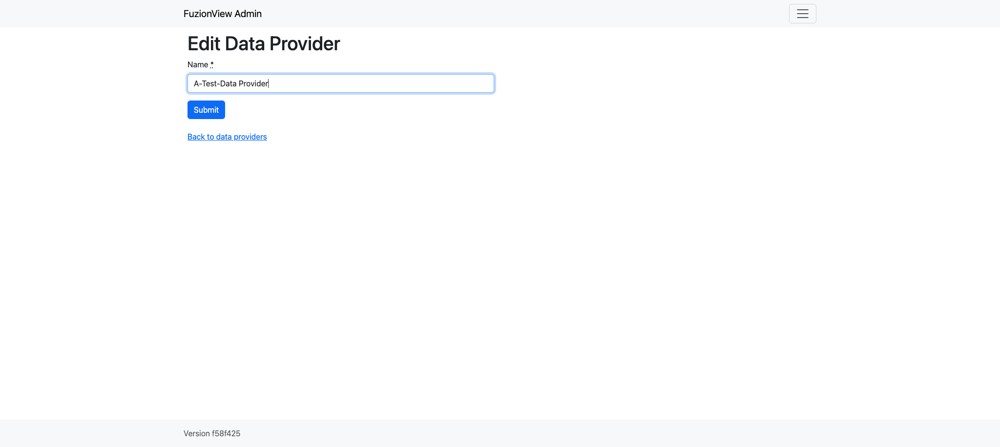
Edit Data Provider Name
Delete Data Provider
To permanently remove a data provider, click the Trashcan action icon next to the provider name.
Warning
This cannot be undone.
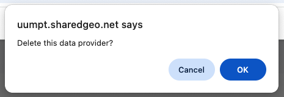
Delete Data Provider
Users
Once a Data Provider has been added, add datasets and a user who can securely manage their datasets.
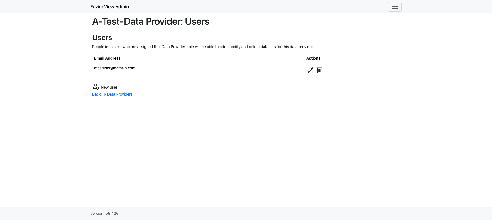
User Management
Create User
Select New User to add a user. Enter the email address of the new user and click Submit.
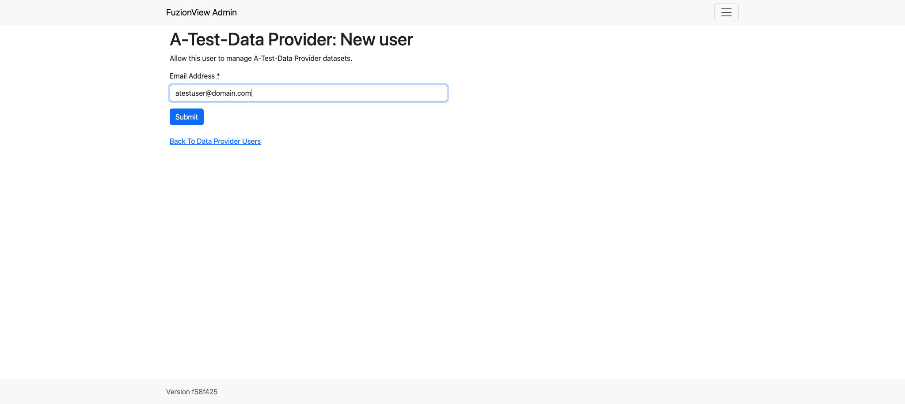
Create User
A confirmation message will display when the user has been created.
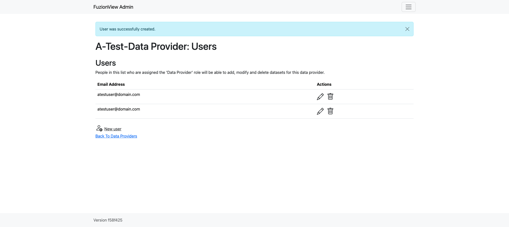
User Created
Manage Users
To manage existing users, select the pencil or trashcan action icon next to the user you want to edit or delete.
Edit or Delete User
Datasets
Once a data provider is added, these are the actions available:
Click the Eye icon to view, add, and manage datasets
Click the Pencil icon to edit the connection for a dataset
Click the Map icon to create a test ticket to validate the dataset connection
Click the Trashcan icon to delete a dataset
View Datasets
To view and manage the datasets associated with a Data Provider, click the Eye action icon next to the data provider’s name. When first created, Data Providers have no datasets.

No Datasets have been added
Add Dataset - Quick Add
- To add the first dataset, select New Dataset and enter the name and URL of your dataset. ESRIJSON and WFS are supported. Use a ‘WFS:’ prefix before WFS dataset urls. ESRIJSON sources should start with ‘ESRIJSON:’.
Name
Credential: No authentication required
Source dataset (the URL for the source ESRI or WFS)
Click Submit to add the dataset.
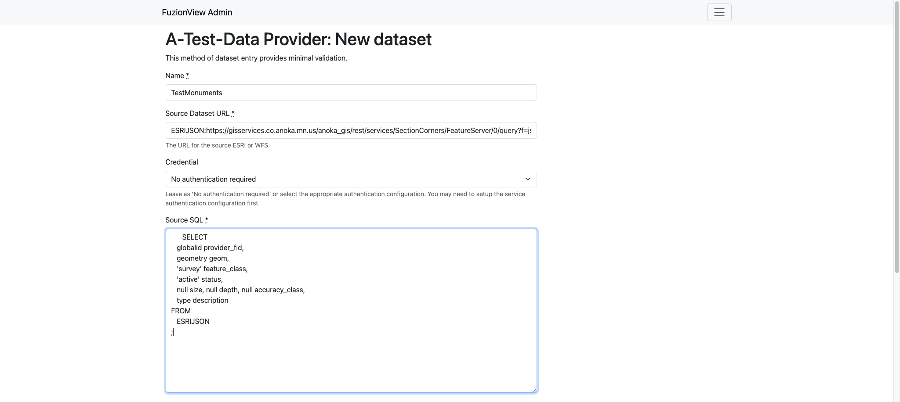
Add New Dataset
Add Dataset - Basic Entry
- Some datasets can be entered with minimal validation. Click the option for Basic dataset entry and add the information needed to connect to your dataset:
Name
Source dataset URL: external link to an externally managed and hosted dataset.
Source SQL: command line options that can be passed to gDal.
Source CO: describes how the source dataset is stored.
Cache the whole dataset: When enabled, operates against the local copy, a good choice for datasets that change infrequently.
Enable the dataset: On by default.
Source SRS: the EPSG code for the coordinate system in use.
Click Submit to add the dataset.
Note
When the dataset is not enabled, the data is only visible in test tickets to validate the dataset.
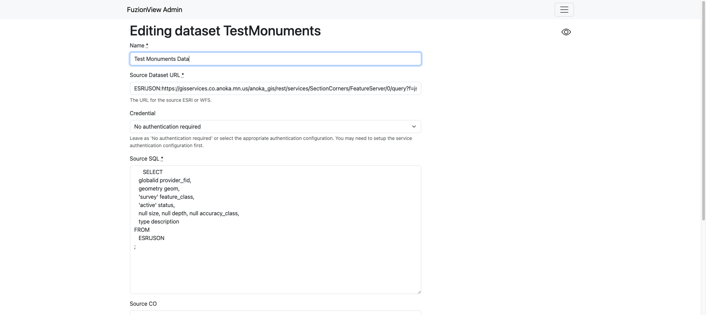
Add New Dataset
Manage Datasets
Select the icon next to a dataset to View, Edit, or Delete it.

View, Edit, or Delete Dataset

View, Edit, or Delete Dataset
Warning
When a dataset is modified, the original data will remain in the system until related tickets expire.
Test Ticket
- Select the map action icon next to a dataset to create a test ticket. Use the test ticket to validate that your dataset connection is successful.
Select a Data Provider
Select a Dataset
Click the Map icon
Use the Zoom icons to find a test ticket location
Select the Polygon tool icon and draw the ticket boundary
Click Submit
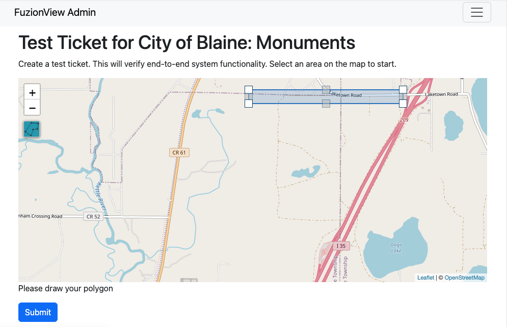
Create Test Ticket
A Pending status message is displayed. It may take up to 5 minutes for the available feature data to populate.
Once the ticket has been created, the status will update to successful.
Click the Test Ticket link to view the feature data and confirm configuration was successful.
Note
The test ticket is available in the system to any authorized dataset user. The ticket exists for only 24 hours and will be automatically deleted.
Warning
If you select a ticket boundary outside the service area, an error message will be displayed.
Service Area
Data providers can define a service area, which allows FuzionView to optimize service requests.
Select the option to Define a Service Area to draw the service area.
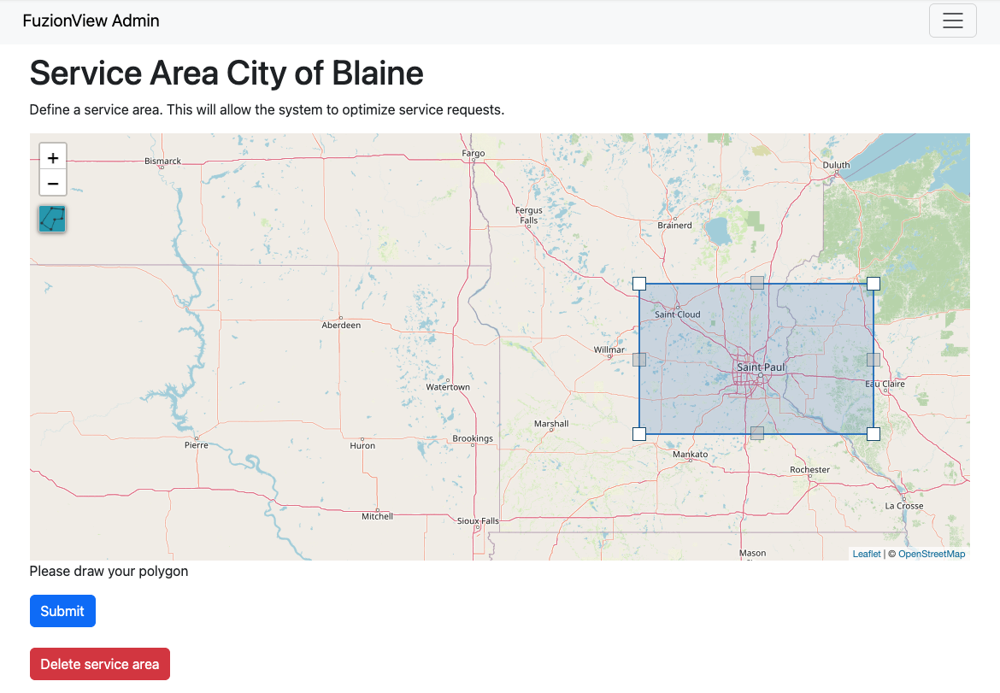
Define a Service Area
Use the + icon to zoom into the correct location. Select the Polygon icon on the left and draw a simple shape around the desired area. Use the points in the middle of each line to adjust the shape until it defines your service area as closely as possible.
Click the Submit button to save. A message will display indicating that the service area has been set.
Delete Service Area
If the service area changes, simply delete the existing service area and create a new one. A confirmation will be displayed. Click OK to remove the service area.
Service Authentication Configurations
- Set up a service authentication configuration for datasets that require authentication. The authentication types are:
HTTP Basic Authentication
ESRI Portal Token
OAuth 2.0 Client Credentials grant
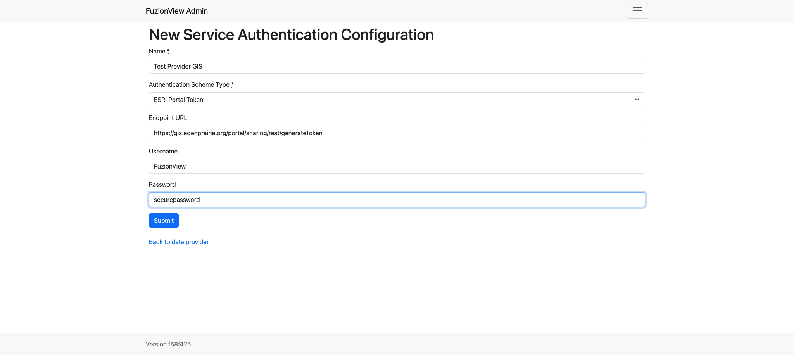
Define an Authentication Configuration
System Settings
Select System Settings from the System Operator menu to manage:
Feature Accuracy Classes
Feature Classes
Features Status
Ticket Types
Use the Eye icon to view and edit and the + icon to add a new object.
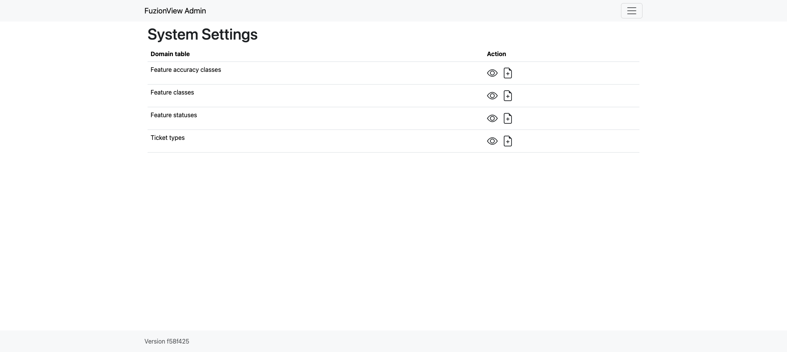
System Settings
Feature Accuracy Classes
- Feature Accuracy Classes are used to indicate how the data was collected as an indication of how reliably accurate it may be. These are the default values you can use to map to any accuracy values you may have set for your data:
sub_centimeter
sub-decimeter
sub_foot
sub_meter
greater_than_meter
georeferenced_digitized
hand_drawn
Use the Pencil icon to edit or the Trashcan icon to delete a value.
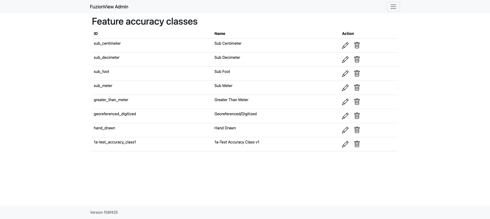
Feature Accuracy Classes
Feature Classes
Feature Classes are used to identify a feature category - known as a LAYER in Ticket Viewer. When a ticket has features in that layer, it will be displayed on the map in a specific color to clearly identify it.
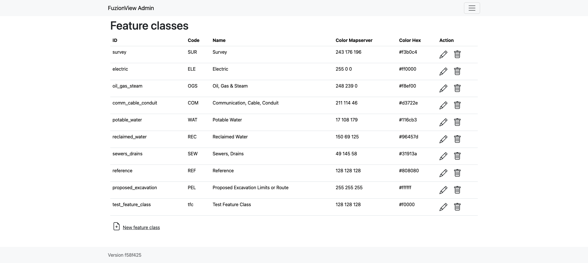
Feature Classes
Feature Statuses
Status is used to indicate whether the feature is in use and in what state of development.
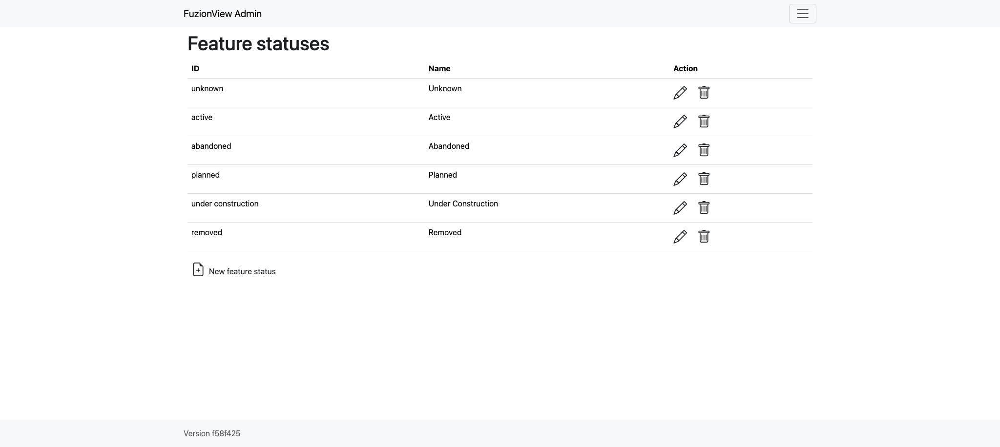
Feature Status
Ticket Types
The Ticket Type is used to visually indicate the urgency of a ticket, which is used in planning response time, such as Normal and Emergency. Emergency tickets display with the ticket number in red. The default values are from your state 811 system.
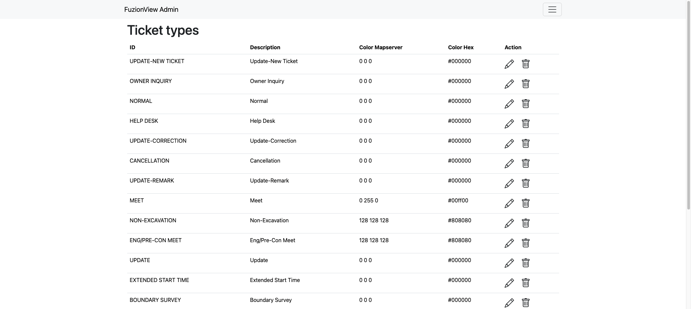
Ticket Types
Last Updated on Dec 23, 2025